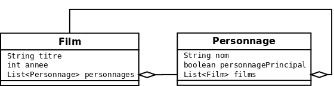
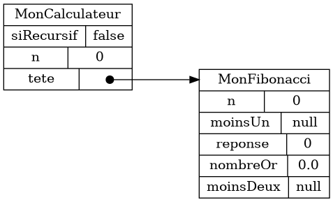
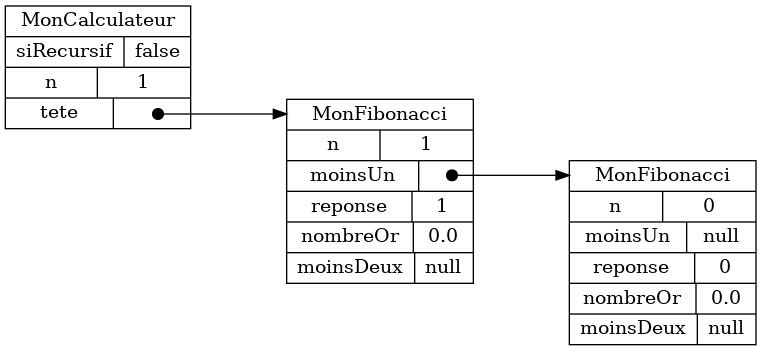
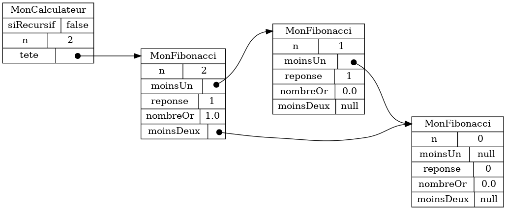
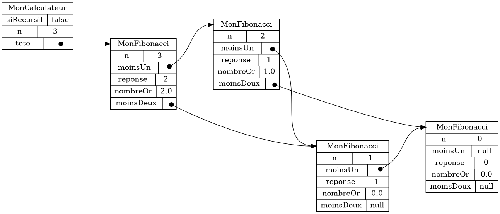

Section 2.3: Graphes d’objets #
Dans le cas général, des données orientée-objet forme un graphe.
2.3.1 Graphe film/personnage #
On peut compléter ainsi la modélisation des films et des personnages présentées aux chapitres précédents.
- Un
Personnageapparaît dans plusieursFilm - Un
Filmcontient plusieursPersonnage
Voici un exemple de données se conformant à cette modélisation.

- Le
PersonnageJames Bond apparaît dans deux films: Dr. No et Bon Baisers de Russie - Le
FilmDr. No contient deux personnages: James Bond et Dr. no
2.3.2 Exemple: Fibonacci #
Dans le cas général, il n’est pas facile de visualiser un graphe d’objet avec des cartes. Dans notre approche, il est donc nécessaire de s’en tenir à des cas particuliers. Comme exemple, nous développons une modélisation de la séquence de Fibonacci.
2.3.3 Définition #
-
Voici le début de la suite de Fibonacci
0 1 1 2 3 5 8 13 21 34 55 89 144 ... -
La définition mathématique est récursive
\( F_0 = 0\\~\\ F_1 = 1\\~\\ F_n = F_{n-1} + F_{n-2}\\~\\ \) -
Autrement dit:
-
0et1sont deux cas spéciaux -
sinon le prochain nombre de la suite est toujours l’addition deux nombres précédents
-
2.3.4 Nombre d’or #
-
La suite de Fibonacci est utilisée pour calculer le nombre d’or, soit environs
1.618- (le nombre d’or est reconnu, entre autres choses, comme une proportion hauteur/largeur agréable à l’oeil)
-
Comme pour π, on peut le calculer le nombre d’or avec autant que précision que désiré
- (c-à-d avec autant de chiffres après le point que désiré)
-
Pour calculer un approximation du nombre d’or on fait tout simplement:
\( \text{nombre d'or} \approx \dfrac{F_{n}}{F_{n-1}} \text{~~~pour~~~} n\geq 2 \) -
Plus on prend un
nélevé, plus la précision est bonne -
Autrement dit, le nombre d’or est à peu près égal à:
-
un nombre de la suite de Fibonacci, divisé par le nombre qui le précède
-
(plus on prend un nombre loin dans la suite, plus l’approximation est bonne)
-
2.3.5 Modéliser la suite de Fibonnaci #
- Pour modéliser la suite en Java, on va créer une structure de données récursive
-
Pour
n = 0, on a le graphe d’objets suivant -
Pour
n = 1, on a le graphe d’objets suivant -
Pour
n = 2, on a le graphe d’objets suivant- NOTE: la suite se lit de droite à gauche
-
Pour
n = 3, on a le graphe d’objets suivant -
Et ainsi de suite…
2.3.6 Pour calculer la réponse et le nombre d’or #
-
Calculer la réponse pour
n >= 2est simplereponse = moinsUn.getReponse() + moinsDeux.getReponse(); -
Même chose pour le nombre d’or
nombreOr = Double.valueOf(reponse) / Double.valueOf(moinsUn.getReponse()); -
Le défi est qu’il faut d’abord construire le graphe d’objet
2.3.7 Construire le graphe d’objets récursivement #
-
Avec des appels récursifs, on va construire d’abord, puis calculer
- on crée d’abord l’objet
n, puisn-1, et ainsi de suite jusqu’à l’objet0
- on crée d’abord l’objet
-
Pour le cas
n >= 2, voici comment procéder-
créer un nouvel objet
MonFibonacciet le mémoriser dansmoinsUn -
enregistrer que le
nde cemoinsUnestn-1(lencourant moins1) -
créer le reste du graphe récursivement en appelant
moinsUn.construireGrapheRecursivement() -
enregister que le
moinsDeuxcourant estmoinsUn.getMoinsUn()(lemoinsUndumoinsUncourant) -
calculer la réponse courante à partir des réponses de
moinsUnetmoinsDeux
-
-
L’appel récursif est plus proche de la définition mathématique
- (pour calculer la réponse en
n, il faut d’abord calculer la réponse enn-1)
- (pour calculer la réponse en
-
L’inconvénient est qu’on peut déborder la pile d’appel
Exception in thread "main" java.lang.StackOverflowError at ca.ntro.cards.fibonacci.solution.MonFibonacci.construireGrapheRecursivement(MonFibonacci.java:31) at ca.ntro.cards.fibonacci.solution.MonFibonacci.construireGrapheRecursivement(MonFibonacci.java:31) at ca.ntro.cards.fibonacci.solution.MonFibonacci.construireGrapheRecursivement(MonFibonacci.java:31) at ca.ntro.cards.fibonacci.solution.MonFibonacci.construireGrapheRecursivement(MonFibonacci.java:31) at ca.ntro.cards.fibonacci.solution.MonFibonacci.construireGrapheRecursivement(MonFibonacci.java:31) at ca.ntro.cards.fibonacci.solution.MonFibonacci.construireGrapheRecursivement(MonFibonacci.java:31) at ca.ntro.cards.fibonacci.solution.MonFibonacci.construireGrapheRecursivement(MonFibonacci.java:31) at ca.ntro.cards.fibonacci.solution.MonFibonacci.construireGrapheRecursivement(MonFibonacci.java:31) at ca.ntro.cards.fibonacci.solution.MonFibonacci.construireGrapheRecursivement(MonFibonacci.java:31) at ca.ntro.cards.fibonacci.solution.MonFibonacci.construireGrapheRecursivement(MonFibonacci.java:31) at ca.ntro.cards.fibonacci.solution.MonFibonacci.construireGrapheRecursivement(MonFibonacci.java:31) at ca.ntro.cards.fibonacci.solution.MonFibonacci.construireGrapheRecursivement(MonFibonacci.java:31) ...- RAPPEL: le code n’est pas bogué, mais limité par la mémoire attribuée à la pile d’appel
2.3.8 Construire le graphe d’objets dynamiquement #
-
En programmation dynamique, on calcule en même temps qu’on construit
- on crée d’abord l’objet
0, puis1, et ainsi de suite jusqu’à l’objetn
- on crée d’abord l’objet
-
L’idée est qu’on fait une boucle pour créer le graphe d’objets
-
on crée une
nouvelleTete -
le
moinsUnde lanouvelleTeteest l’anciennetete -
le
moinsDeuxde lanouvelleTeteest lemoinsUnde l’anciennetete -
c-à-d on insère la
nouvelleTeteà gauche, et on «pousse» les objets existants vers la droite
-
-
Pour le cas
n >= 2, voici comment procéder-
pour chaque
iallant de2àn(inclusivement)-
créer un nouvel objet
MonFibonaccipour représenter lanouvelleTete -
enregistrer que le
nde lanouvelleTeteesti -
enregistrer que le
moinsUnde lanouvelleTeteest latetecourante -
enregistrer que le
moinsDeuxde lanouvelleTeteest lemoinsUnde latetecourante -
enregistrer que
tetepointe maintenant vers lanouvelleTete -
calculer la réponse pour
tete
-
-
-
Le calcul dynamique est moins intuitif (et moins proche de la définition mathématique), mais
- on a éliminé l’appel récursif, alors on ne peut plus déborder la pile d’appel